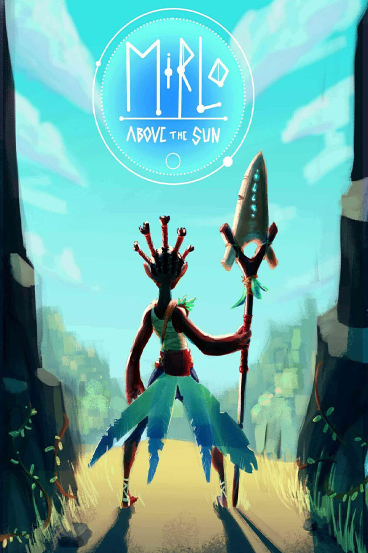

Mirlo Above the Sun
Mirlo Above the Sun
Detalhes
|  | |
| Tempo de jogo | 26m 0s |
| Última Atividade | 01/03/2024 21:26:11 |
| Adicionado | 18/04/2024 21:09:14 |
| Modificado | 10/03/2025 1:50:53 |
| Status de Conclusão | Jogado |
| Biblioteca | Steam |
| Fonte | Steam |
| Plataforma | PC (Windows) |
| Data de Lançamento | 17/06/2021 |
| Pontuação da Comunidade | 78 |
| Avaliação da crítica | |
| Pontuação do Usuário | |
| Gênero | Ação Aventura Gratuito p/ Jogar |
| Desenvolvedor | DigiPen Europe-Bilbao |
| Editor | DigiPen Institute of Technology |
| Funções | Compat. Parcial Com Controle Um Jogador |
| Links | Central da comunidade Discussões Guias Notícias Página na loja PCGamingWiki |
| Tag | [EMT] Video Micro missing [HLTB] 00 a 01 horas |
Descrição


After years of balance and symbiosis, Mirlo’s home is attacked and laid to waste by the Solarean civilization, a totalitarian regime that is expanding and slaughtering anything in its way. Solareans found a source of energy in the forest Beasts; they would lock them up in energy extracting machines and exploit them. Mirlo wants her home back, and she must return the forest to its essence and protection, she must free all Beasts.
Join Mirlo to save her home and her forest friends in a hack & slash adventure. Use Mirlo’s attack to push and defeat enemies, jump to avoid hazards, and save all the Beasts.

Hack and Slash Combat:

Action-Backed Gameplay:

Scenic Landscapes:

Featured Characters:


Mirlo: Above the Sun is a project developed by Kaiju In The Bayou, a team of 4th Year students at DigiPen Institute of Technology Europe - Bilbao (http://digipen.es/) in a 9-month development cycle using Unreal Engine 4.